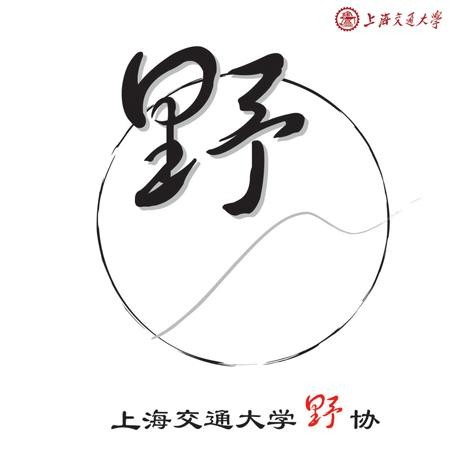

发信人: BeatboxST (ST), 信区: outdoor
标 题: 【小学期会员线召集帖】——【巨龙顶】
发信站: 饮水思源 (2014年06月21日14:37:02 星期六)
小学期还想霉在寝室吗？
还在为考完试时间不知如何打发而烦恼吗？
那就和我们一起出来，到户外来体验一番行诸山野的乐趣吧！
欢迎加入野协巨龙顶之行！
screen.width - 200){this.width = screen.width - 200}">
LET’S GO HIKING！
【线路概况】
巨龙顶位于浙江省衢州市衢县坑口乡和举村乡分界处，衢州龙门峡谷附近，属仙霞岭余脉
，山体呈东西走向，海拔1450米，为衢州市境内最高峰之一。 巨龙顶山势巍峨磅礴，山、
岗、峦起伏绵亘，宛若一条巨龙腾舞，故形象地称为巨龙顶。山上有一瀑布，落差约70米
，气势雄伟，与雁荡大龙湫不相上下。四周邈绝众岭，峰峦插入天际，有原始森林76.67公
顷，种子植物1000余种。晴天时登巨龙顶，百里山川尽收眼底，清晨可观日出，雨时云雾
缭绕，阴晴之际能见到苍茫云海。
此线路只有当地少数户外队伍穿越过，山势陡峭，有一定难度和强度，报名后会有体
能测试筛选。登顶时间约6-8小时，需要连续向上作高强度攀升，下山时间约5-6小时。营
地为一倾斜山崖下方平地，曾为苦行僧修炼之地。
screen.width - 200){this.width = screen.width - 200}">
【出行时间】
7月4日晚出发-7月6日晚返回
【行程安排】
第一天（7月4日）：
下午5点50： 于庙门集合，上车前调整好装备，不会调整背负者提前15分钟到。
下午6点30： 出发并短暂休息后，将会有破冰活动，消除大家第一次见面之间的隔
阂。
凌晨12点左右： 抵达老乡家，在老乡家屋里用防潮垫睡袋休息；
第二天（7月5日）：
早5点半： 起床，在老乡家吃早饭（热餐）；
早7点： 收拾完毕，拔营出发；
中午12点： 于较宽阔处就地休息吃自带冷餐；
下午2点： 登顶巨龙顶
下午4点： 到达营地，扎营、做饭、篝火游戏聊天。
晚9点： 睡觉休息
第三天（7月6日）：
早5点： 起床，吃自带早餐（热餐）；
早7点： 收拾完毕，准备下山；
中午12点左右： 回到向导家，腐败；
下午1点： 乘车回校
【线路难度】
强度：★★★★, 预计第一天行走8-9h
难度：★★★★★,山势陡峭，很多地方须手脚并用
风景：★★★★，山脊处的风景真心点个赞
【成员组成】
成员总人数：34人（包括领队等）
领队：徐向飞，13816998856
副领队：胡青青，13162575960
押队：陈飞帆，18818212891
【费用及装备】
个人装备：登山鞋（非常重要）、背包（包罩）、防潮垫、登山杖、睡袋、头灯及备用电
池、军刀、雨衣、劳保手套、衣物（备用一套以供换洗的，外套）、防晒物品、防水保护
用具、餐具、现金少许、身份证、学生证、手机及移动电源。
共用装备：帐篷（防风绳、备用地钉）、炉头、套锅
药品：云南白药、蛇药、风油精、清凉油、创可贴、止血带（队医携带）
车费：180元
向导：30元
保险：10元
医疗费：5元
腐败：35元
装备费：50元（帐篷15元，气罐炉头10元，背包15，睡袋5，防潮垫5）
总计：310元（会员）、340（非会员）多退少补
【注意事项】
1.一切行动听从领队安排！
2.上面的只是一些基本信息，关于这次线路的更多细节、装备准备等问题都会在准备会上
详细地告知。
3.以上行程为基本行程，领队有权根据天气、队员状态等情况调整活动计划，不承担由此
造成的损失和责任。
【报名方式】：
同去网
1、报名截止时间： 6.29（周日）20:00。体能测试筛选时间：6.30（周一），20:00，南
体。
2、准备会时间：7.1（周二） 20:30，不接受不能参加准备会的同学报名。
4、有疑问请联系领队徐向飞，联系电话：13816998856
5、请留意BBS中outdoor版，人人主页，野协微信“交大野协”，同去网。
注：报名截止时间可能会视报名情况提前，人员选取不按照先到先得的原则，我们会调
整队伍新老比例和男女比例，本校会员优先。准备会后领队不会单方面取消队员资格（不
愿意签署知情同意书，购买保险，缴纳活动费者除外）。对于准备会后要求退队的同学，
若没有替代队员，活动费中车费部分不退还。
小学期的两条线路请选择其中一条报名，请勿同时报名两条线路哟
4.野外活动不同于一般旅游，参加活动的队员须听从领队和向导的组织安排，严禁野外用
火吸烟，严禁擅自离队，所有活动安全第一，对于无视指挥所造成的后果由自己负责。
5.无论什么时候，一旦觉得事情应付不来，就要讲出来。艰难的路段最好请人帮助，甚至
放弃不爬，也比发生危急情况要好。
6.徒步过程中应发扬团队精神，途中留意同伴情况，危险地段互相提醒或协助通过。
7. 迷路时应折回原路，或寻找避难处静待救援；除保持体力外，并安抚队员平稳情绪。
8.提倡环保，注意保护环境，请将垃圾带离及小心用火，切勿乱丢烟蒂，引起山火。
9. 安全第一，切忌个人英雄主义，要量力而为，集体活动以大局为重，不搞个人主义，不
得单独行动。
10.请守时，对自己负责，对他人负责。
11.如有其他疑问，可以联系
副领队：胡青青，13162575960
押队：陈飞帆，18818212891
野外生存协会
行诸山野，立命天地
 screen.width - 200){this.width = screen.width - 200}">
--
※ 来源:·饮水思源 bbs.sjtu.edu.cn·[FROM: 59.78.21.162]
※ 修改:·BeatboxST 于 2014年06月21日14:37:20 修改本文·[FROM: 59.78.21.162]
|